Stationary iterative methods based on matrix splittings, such as Gauss-Seidel and symmetric successive over-relaxation (SSOR), are well understood for solving linear systems
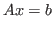
where
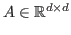
and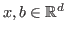
. The matrix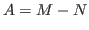
and the solution is computed by solving
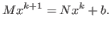
The convergence rate is determined by the spectral radius of , but can be improved by using a polynomial acceleration technique, such as Chebyshev acceleration.
We investigate how this technology can be transferred to the problem of constructing efficient Markov chain Monte Carlo (MCMC) methods to sample from high dimensional Gaussian distributions,
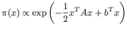
where the matrix is the precision matrix for the distribution. We can use exactly the same splitting for a MCMC method as for a linear solver to obtain an iterative procedure
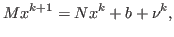
where
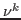
is an independent sample from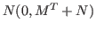
. This iterative procedure computes a Markov chain that will converge in distribution to a sample from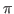
if the corresponding iterative solver also converges. The rate of convergence is again dependent on the spectral radius of .The Gibbs sampling algorithm corresponds to the Gauss-Seidel and SSOR iterative solvers, as studied by Fox and Parker 2013.
Other sampling methods also correspond to matrix splittings, and we use this correspondence to help us understand the convergence properties of these sampling methods. For example Crank-Nicolson algorithms, described in Cotter et al. 2013, can be expressed as matrix splittings.
The Metropolis-Hastings algorithm is a popular method for constructing MCMC methods, where the accept/reject step in the algorithm is used because a proposal must be corrected so that the Markov chain converges to the desired target distribution. For Metropolis-adjusted Langevin (MALA) and Hamiltonian/hybrid Monte Carlo (HMC) proposals we can express the proposal as a matrix splitting of an ``effective'' precision matrix
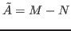
. The difference between the target precision matrix